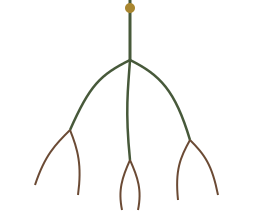

Plantados junto às águas
Salmo 1:1-6
Estudos bíblicos diários
"Ele será como a árvore plantada junto a ribeiros de águas, que dá o seu fruto no seu tempo." — Salmo 1:3

Estudos publicados
Todos os dias, às 6h, um novo estudo é publicado automaticamente.
Salmo 1:1-6
João 10:1-18
Hebreus 11:8-10
Escolha a versão acima para começar a leitura.